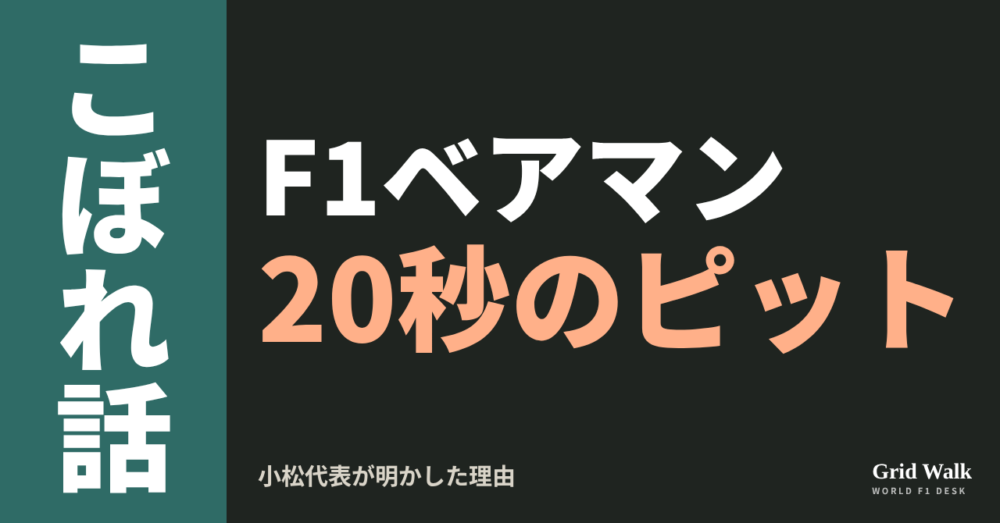
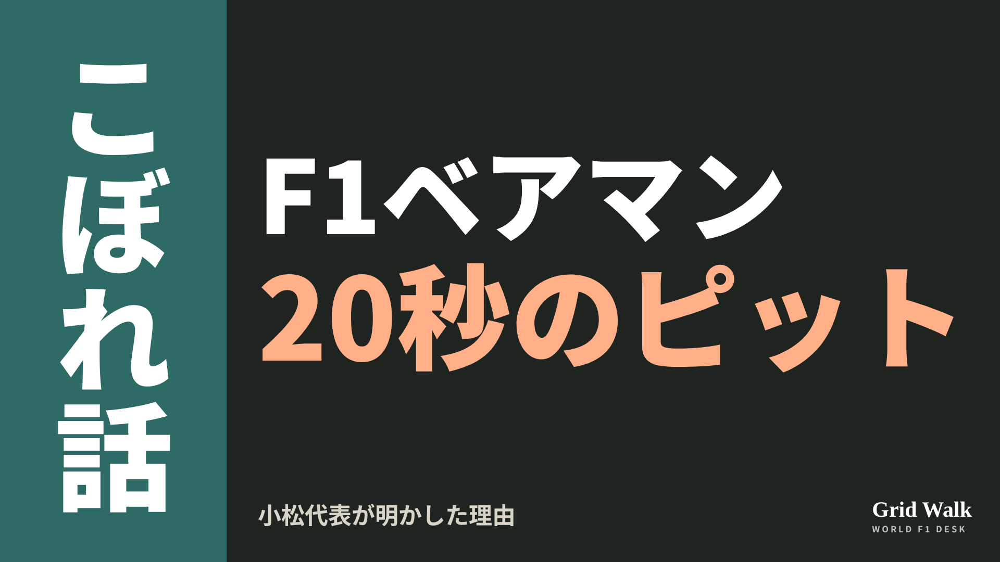
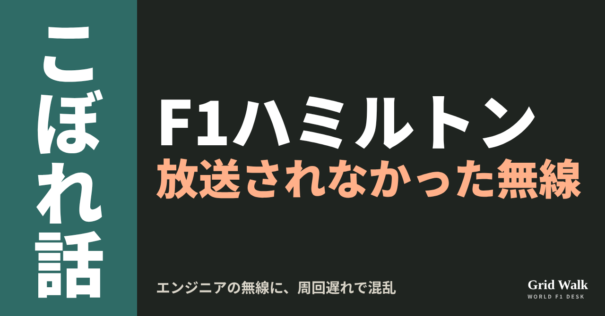
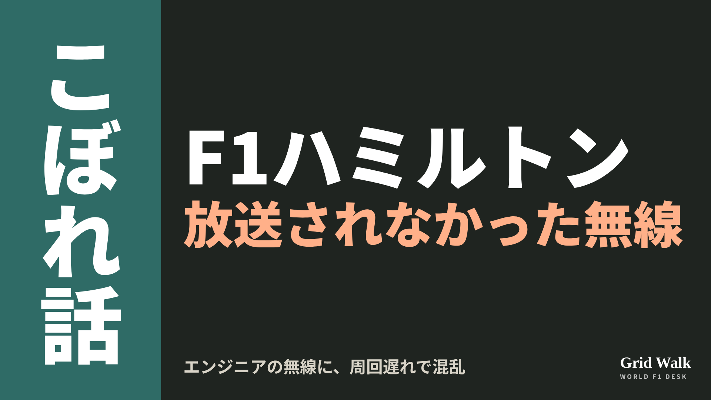
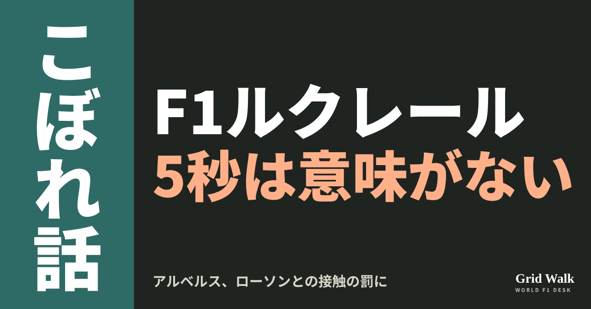
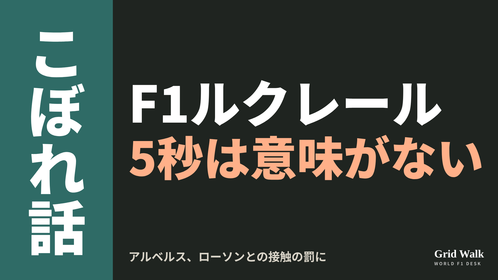
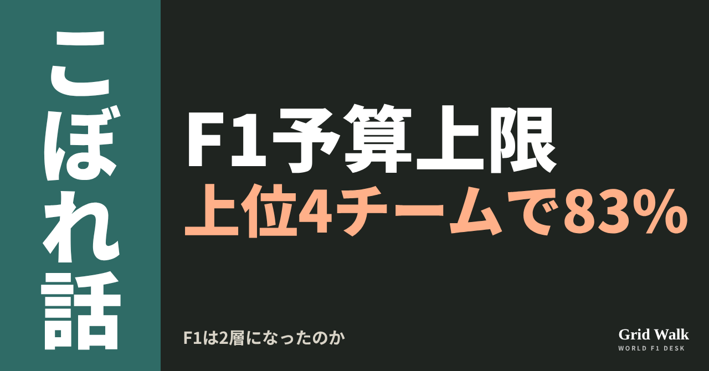
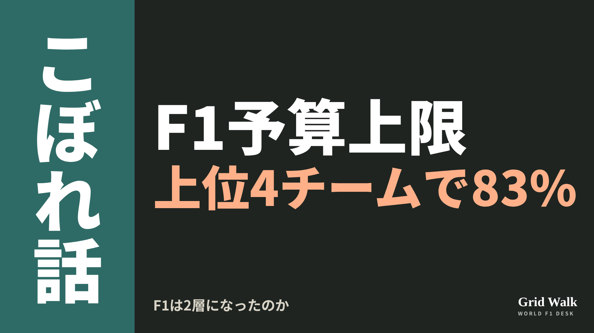
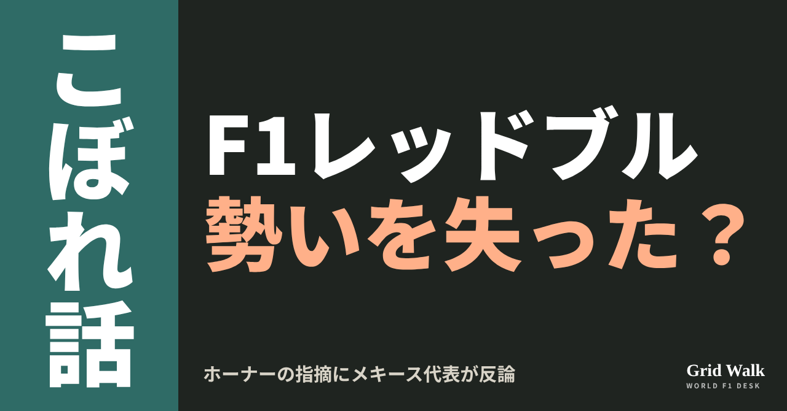
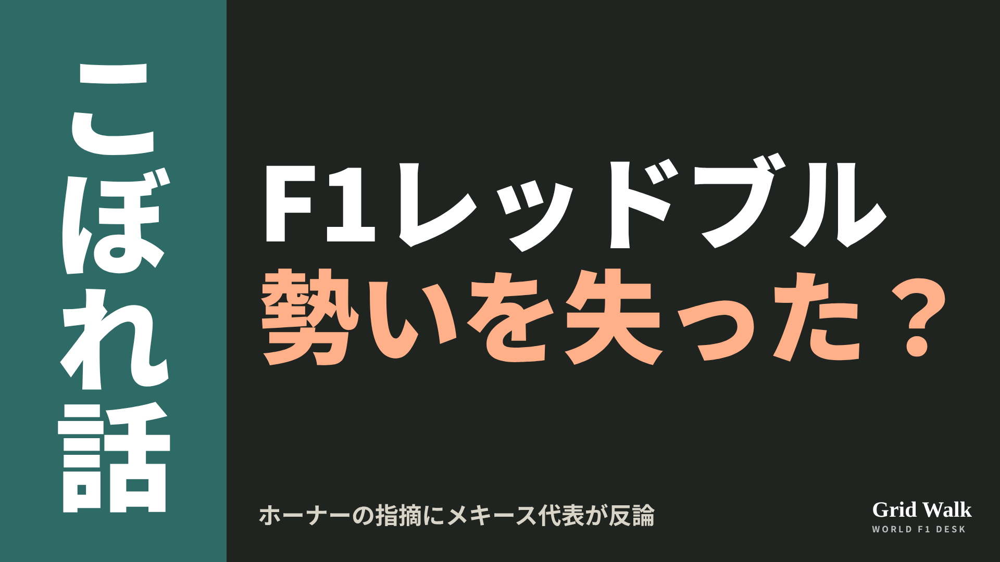

<meta charset="utf-8"><title>11/12のコラム note貼り付け</title>
<style>
/* one column of numbered paste steps; text steps vs image steps differ by marker */
:root{--bg:#F5F4F0;--card:#FFFFFF;--ink:#1D2321;--mute:#5F665F;--line:#DCDAD2;--btn:#1F5FBF;--btnok:#2E8B4F;--img:#E9F3EC;--imgink:#22663B;--sans:'IBM Plex Sans JP','Hiragino Sans','Noto Sans JP',sans-serif}
@media (prefers-color-scheme:dark){:root:not([data-theme="light"]){--bg:#171A19;--card:#202423;--ink:#ECEDE8;--mute:#A3AAA2;--line:#343937;--btn:#4D8BE6;--btnok:#3FA866;--img:#1E2C23;--imgink:#8FD3A6;color-scheme:dark}}
:root[data-theme="dark"]{--bg:#171A19;--card:#202423;--ink:#ECEDE8;--mute:#A3AAA2;--line:#343937;--btn:#4D8BE6;--btnok:#3FA866;--img:#1E2C23;--imgink:#8FD3A6;color-scheme:dark}
body{background:var(--bg);color:var(--ink);font-family:var(--sans);font-size:15px;line-height:1.75;padding:20px 16px 60px}
main{max-width:680px;margin:0 auto;display:grid;gap:28px}
header h1{font-size:22px;margin:0 0 6px;text-wrap:balance}
header p{margin:0;color:var(--mute);font-size:14px}
nav{display:flex;gap:8px;flex-wrap:wrap;margin-top:12px}
nav a{border:1px solid var(--line);border-radius:999px;padding:4px 14px;color:var(--ink);text-decoration:none;font-size:14px;background:var(--card)}
.part h2{font-size:18px;line-height:1.5;margin:0 0 12px;text-wrap:balance;display:flex;gap:10px;align-items:baseline;flex-wrap:wrap}
.tag{font-size:13px;background:var(--ink);color:var(--bg);border-radius:6px;padding:1px 9px}
.steps{list-style:none;margin:0;padding:0;display:grid;gap:12px}
.st{background:var(--card);border:1px solid var(--line);border-radius:12px;padding:12px;min-width:0}
.hd{display:flex;align-items:center;gap:8px;margin-bottom:8px}
.no{width:26px;height:26px;border-radius:50%;background:var(--btn);color:#fff;display:inline-flex;align-items:center;justify-content:center;font-size:13px;font-weight:700;flex:0 0 26px}
.im .no{background:var(--btnok)}
.hd em{font-style:normal;font-size:12px;background:var(--img);color:var(--imgink);border-radius:6px;padding:0 8px}
.bx{font-size:13.5px;line-height:1.7;border:1px solid var(--line);border-radius:8px;padding:8px 10px;max-height:110px;overflow:auto;overflow-wrap:anywhere}
.bx.tall{max-height:150px}.bx p{margin:0 0 6px}.bx h2{font-size:14px;margin:8px 0 4px}.bx a{color:var(--btn)}
.st img{display:block;width:100%;max-width:100%;border:1px solid var(--line);border-radius:8px}
.sub{font-size:12.5px;color:var(--mute);margin:6px 0 0}
.cp{width:100%;margin-top:8px;padding:12px;border:0;border-radius:10px;background:var(--btn);color:#fff;font:600 15px var(--sans);cursor:pointer}
.cp.ok{background:var(--btnok)}.cp.dl{background:var(--btnok)}.cp:focus-visible{outline:3px solid var(--ink);outline-offset:2px}
.xh{font-size:15px;margin:20px 0 10px}
.fb{font-size:13px;line-height:1.7;margin:8px 0 0;padding:8px 10px;border-radius:8px;background:var(--img);color:var(--imgink)}
.opts{display:grid;grid-template-columns:repeat(auto-fill,minmax(240px,1fr));gap:10px}
.opt{min-width:0}.opt img{display:block;width:100%;border:1px solid var(--line);border-radius:8px}
.ol{display:flex;align-items:center;gap:8px;margin-top:6px}.ol b{font-size:13px;flex:0 0 auto}.ol .on{font-size:12.5px;color:var(--mute);flex:1;min-width:0}.ol .cp{width:auto;flex:0 0 auto;padding:9px 14px}.ol .cp{margin:0;padding:9px}
.toast{font-size:13px;color:var(--mute);margin-top:6px}
</style>
<main><header><h1>11/12のコラム note貼り付け</h1><p>いま公開済みは5本です。青い番号は文章、緑は画像です。</p><nav><a href="#p1">1</a><a href="#p2">2</a><a href="#p3">3</a><a href="#p4">4</a><a href="#p5">5</a></nav></header><section class="part" id="p1"><h2><span class="tag">OFF GRID</span>ベアマン「20秒のピットストップだった」　小松代表が語った理由</h2><p class="sub">サイトに公開：11:06</p><ol class="steps">
<li class="st im"><div class="hd"><span class="no">1</span><b>見出し画像</b><em>画像</em></div><button class="cp dl" data-img="img/bearman-twenty-second-stop-20261112.png" data-name="bearman-twenty-second-stop-20261112_見出し画像.png">ダウンロード</button></li>
<li class="st"><div class="hd"><span class="no">2</span><b>タイトル</b></div><div class="bx" id="p1t">ベアマン「20秒のピットストップだった」　小松代表が語った理由</div><button class="cp" data-plain="p1t">タイトルをコピー</button></li>
<li class="st"><div class="hd"><span class="no">3</span><b>本文</b></div><div class="bx tall" id="p1r"><p>予選8番手。それでもハースのオリバー・ベアマンは、サンパウロGPを17位、無得点で終えました。本人が挙げた理由は「20秒のピットストップだった」。ドイツのMotorsport-Totalが11月11日に伝えました。</p><p>ドイツとイギリスの元の記事、F1公式のピット時間と順位表へのリンクはサイトで → <a href="https://f1gridwalk.github.io/lens/bearman-twenty-second-stop-20261112/?utm_source=note&amp;utm_campaign=bearman-twenty-second-stop-20261112">https://f1gridwalk.github.io/lens/bearman-twenty-second-stop-20261112/?utm_source=note&amp;utm_campaign=bearman-twenty-second-stop-20261112</a></p><h2>ほかの車より約15秒長く</h2><p>F1公式のピットストップの表によると、ベアマンの最初のピットは16周目。ピットレーンにいた時間は39.773秒でした。同じ16〜17周目に入ったほかの車は、23.740秒（ローソン）から25.680秒（コラピント）。約15秒長かった計算です。</p><blockquote><p>「問題は、20秒のピットストップだったことです。ふつう、レースにとって理想的とは言えません。差はものすごく小さいので」「ピットで20秒止まっていたら、レースは終わりです」（ベアマン、Motorsport-Total／ドイツ）</p></blockquote><blockquote><p>「最初のストップで多くの時間を失って、サインツやほかの何台かの後ろに引っかかってしまった」（ベアマン、RacingNews365／イギリス）</p></blockquote><h2>原因は1周目の3コーナー</h2><p>チーム代表の小松礼雄は、原因は最初の周にあったと説明しています（11月9日のコラム https://f1gridwalk.github.io/lens/camara-debut-race-20261109/ でも紹介）。</p><blockquote><p>「オリバーは1周目の3コーナーで滑りました。そのとき、オリバーの車の後ろのクラッシュ構造が傷みました。でも、その時点では私たちはまだそれを知りませんでした」「残念ながら、それがストップに大きく響きました。とても残念です。結局、それが彼のレースを台無しにしたのですから」（小松礼雄代表、Motorsport-Total／ドイツ）</p></blockquote><p>同誌によると、このときベアマンはフェルナンド・アロンソと接触しています。同誌は、そのせいでメカニックがジャッキを正しくかけられなかったとみられる、と書きました。</p><p>PlanetF1によると、ハースはベアマンをシャルル・ルクレールのフェラーリの進路に送り出し、ルクレールはブレーキを踏んでよけることに。スチュワードはこれをアンセーフリリース（危ない状態でピットから出すこと）とみて、5秒を加えています。順位は17位のまま（決まりは https://f1gridwalk.github.io/deep/rules/unsafe-release/ ）。どのストップかは、Motorsport-Totalは1回目、RacingNews365は最後のタイヤ交換と書き、分かれています。</p><h2>7位争いは3点差</h2><blockquote><p>「最初のピットストップの前は、ルクレールとルイス・ハミルトンの前にいました。もちろん、乾いてきたら彼らのほうがずっと速かった。でも、僕は前にいた。だから本当に痛い」（ベアマン、Motorsport-Total／ドイツ）</p></blockquote><p>FIAの正式結果では、ルクレールが8位で4点、ハミルトンが9位で2点。10位のニコ・ヒュルケンベルグ（アウディ）は1点。F1公式の順位表で、7位のハースは31点、8位のアウディは28点です。Motorsport-Totalによると、夏休み明けだけならアウディ12点、ハース10点。残りは3戦です。</p><blockquote><p>「いま、コンストラクターズの7位争いで大きなプレッシャーがかかっています。それなのに、いまはその順位をただ手放しているように感じます」（ベアマン、Motorsport-Total／ドイツ）</p></blockquote><p>作戦では「いつピットに入るか、いつ外に残るか、うまく伝え合えた」と話しています（Motorsport-Total）。要約は https://f1gridwalk.github.io/news/de-motorsporttotal-bearman-haas-pitstops/ に。4人目のドライバーの決まりは https://f1gridwalk.github.io/lens/hirakawa-haas-four-driver-rule-20261111/ 、オコンを外した日のチームは https://f1gridwalk.github.io/lens/komatsu-ocon-surprised-20261108/ で。</p><p>編集部としては、1周目にできたチームにも見えない傷が、ピットの20秒になって表に出た日曜だったと見ています。</p><p><strong>傷は見えなかった。それでも20秒は戻らない。あなたは、ハースがコンストラクターズ7位を守れると思いますか？</strong></p><p>━━━━━━━━━━</p><p><strong>F1 Grid Walk では、世界のF1ニュースを毎日日本語でまとめています。</strong></p><p>海外の記事の要約を、毎日載せています。</p><p><a href="https://f1gridwalk.github.io/">https://f1gridwalk.github.io/</a></p><p>ほかの海外記事も読みたい方は、F1 Grid Walkへ。</p><p><a href="https://f1gridwalk.github.io/lens/bearman-twenty-second-stop-20261112/">https://f1gridwalk.github.io/lens/bearman-twenty-second-stop-20261112/</a></p><p>━━━━━━━━━━</p><p><a href="https://de.motorsport.com/f1/news/haas-verschenkt-wichtige-wm-punkte-bearman-rechnet-mit-seinem-team-ab-26111102/3456952/">出典：motorsport.com ドイツ版（元はMotorsport-Total.com）（ドイツ）</a></p><p><a href="https://www.formel1.de/news/grand-prix-berichte/2026-11-11/haas-verschenkt-wichtige-wm-punkte-bearman-rechnet-mit-seinem-team-ab">出典：Formel1.de（元はMotorsport-Total.com）（ドイツ）</a></p><p><a href="https://racingnews365.com/oliver-bearman-feels-haas-giving-it-away-in-audi-fight-after-pit-stop-disaster">出典：RacingNews365（イギリス）</a></p><p><a href="https://www.planetf1.com/news/oliver-bearman-fia-penalty-charles-leclerc-f1-2026-brazilian-grand-prix">出典：PlanetF1（イギリス）</a></p><p><a href="https://www.formula1.com/en/results/2026/races/1299/aa/pit-stop-summary">出典：Formula 1 公式（イギリス）</a></p><p><a href="https://www.formula1.com/en/results/2026/team">出典：Formula 1 公式（イギリス）</a></p><p><a href="https://www.fia.com/system/files/decision-document/2026_sao_paulo_grand_prix_-_final_race_classification.pdf">出典：FIA（国際）</a></p></div><button class="cp" data-rich="p1r">本文をコピー</button></li>
<li class="st"><div class="hd"><span class="no">4</span><b>ハッシュタグ</b></div><div class="bx" id="p1h">#F1 #F1jp #ハース #ベアマン #小松礼雄 #サンパウロGP #ピットストップ #アウディ #F1こぼれ話 #OFFGRID</div><button class="cp" data-plain="p1h">タグをコピー</button></li>
</ol><h3 class="xh">X</h3><ol class="steps">
<li class="st im"><div class="hd"><b>X用の画像</b><em>画像</em></div><button class="cp dl" data-img="img/x_bearman-twenty-second-stop-20261112.png" data-name="x_bearman-twenty-second-stop-20261112.png">ダウンロード</button></li>
<li class="st"><div class="hd"><b>① noteをシェアするときの文</b></div><div class="bx" id="p1x0">サンパウロで予選8位から17位に終わったベアマンは「20秒のピットストップだった」。F1公式の表で最初のピットは39.773秒。小松代表が語った理由と、アウディと3点差になったハースの今をnoteにまとめました #F1jp #ベアマン</div><button class="cp" data-plain="p1x0">コピー</button></li>
<li class="st"><div class="hd"><b>② ①への返信</b></div><div class="bx" id="p1x1">ほかの海外記事も読みたい方は、F1 Grid Walkへ。
https://f1gridwalk.github.io/lens/bearman-twenty-second-stop-20261112/?utm_source=x&amp;utm_campaign=bearman-twenty-second-stop-20261112</div><button class="cp" data-plain="p1x1">コピー</button></li>
<li class="st"><div class="hd"><b>③ ②への返信</b></div><div class="bx" id="p1x2">毎日の海外F1ニュースは、日本語でこちらにまとめています。
https://f1gridwalk.github.io/</div><button class="cp" data-plain="p1x2">コピー</button></li>
</ol></section><section class="part" id="p2"><h2><span class="tag">OFF GRID</span>「ノリスと争っている」　エンジニアの無線に周回遅れのハミルトンが混乱</h2><p class="sub">サイトに公開：11:07</p><ol class="steps">
<li class="st im"><div class="hd"><span class="no">1</span><b>見出し画像</b><em>画像</em></div><button class="cp dl" data-img="img/hamilton-untelevised-radio-20261112.png" data-name="hamilton-untelevised-radio-20261112_見出し画像.png">ダウンロード</button></li>
<li class="st"><div class="hd"><span class="no">2</span><b>タイトル</b></div><div class="bx" id="p2t">「ノリスと争っている」　エンジニアの無線に周回遅れのハミルトンが混乱</div><button class="cp" data-plain="p2t">タイトルをコピー</button></li>
<li class="st"><div class="hd"><span class="no">3</span><b>本文</b></div><div class="bx tall" id="p2r"><p>「ノリスと争っている」。サンパウロGPの38周目、ピットを出るルイス・ハミルトン（フェラーリ）に、レースエンジニアのカルロ・サンティはそう伝えました。ノリスはこのとき首位で、ハミルトンはすでにそのノリスに1周遅れにされていました。放送されなかった2人の無線を、イギリスのPlanetF1が書き起こしています。</p><p>元の記事へのリンクと、400戦目の週末をまとめたSTORYはサイトで → <a href="https://f1gridwalk.github.io/lens/hamilton-untelevised-radio-20261112/?utm_source=note&amp;utm_campaign=hamilton-untelevised-radio-20261112">https://f1gridwalk.github.io/lens/hamilton-untelevised-radio-20261112/?utm_source=note&amp;utm_campaign=hamilton-untelevised-radio-20261112</a></p><p>20番グリッドから出たハミルトンは、FIAの正式結果で1周遅れの9位。無線には、自分の位置をたずねる言葉が何度も出てきます。</p><h2>「なぜノリスが前にいるの？」</h2><p>PlanetF1によると、フェラーリはアウディのニコ・ヒュルケンベルグをアンダーカットしようと、ハミルトンをピットに入れました。その出口で、サンティはこう言いました。</p><blockquote><p>「モードはレース。ノリスと争っている」（サンティ、チーム無線／PlanetF1〈イギリス〉）</p></blockquote><blockquote><p>「ありがとう、みんな。彼に順位を取られた」「何が起きてるの？　わからない。僕はどこ？」「わからないってどういうこと？　なぜノリスが前にいるの？　周回遅れにされた？」（ハミルトン、同）</p></blockquote><blockquote><p>「周回遅れだ。うん、周回遅れ」「ヒュルケンベルグをアンダーカットしようとしていて、ラッセルに近づいている。争っているのは7位。ノリスはまだピットに入っていない。彼が首位だ」（サンティ、同）</p></blockquote><p>PlanetF1は、サンティのこの言葉で、ハミルトンは首位と順位を争っていると思わされた、と書いています。</p><p>PlanetF1の書き起こしでは、ハミルトンは42周目から、周回遅れを取り戻す手順に戸惑います。</p><blockquote><p>「今ブルーフラッグが出ていて、ちょうど周回遅れを取り戻したところだ。どうすればいい？」（ハミルトン、チーム無線／PlanetF1〈イギリス〉）</p></blockquote><blockquote><p>「プッシュを続けて。1秒差を開ければ大丈夫。君はコース上でいちばん速い車だ」（サンティ、同）</p></blockquote><p>44周目にも「まだ青いライトが出ている。どうすればいい？」とたずねています。F1公式のレポートは、周回遅れを取り戻したのを44周目としています。</p><h2>「雨が降ってるって言わなかった」</h2><p>54周目、ハミルトンが「雨は……雨は降るの？」とたずね、サンティは「6周後に雨の予想」と答えました。</p><p>61周目の終わり、サンティは「ボックス、ボックス。（中略）インターに替える」と呼びました。PlanetF1によると、ハミルトンは前の車についてピットに向かうように見えましたが、最後の瞬間にコースにとどまり、「逃した。ピットの入り口」。</p><blockquote><p>「ああ、もう。雨が降ってるって言わなかったじゃないか。まだ行けると思った。コース上では問題なかったんだ」「今どこ？」（ハミルトン、チーム無線／PlanetF1〈イギリス〉）</p></blockquote><blockquote><p>「わからない。ノリス」「ノリスを先に行かせないと。9位だ。争っているのは後ろの車」（サンティ、同）</p></blockquote><p>そのあと、ピットに向かう周でスピンして壁に軽く触れ、戻ると「みんな……みんなどこ？」。サンティは、ルクレールが8位で20〜25秒前にいると伝えました。ノリスがチェッカーを受けたときも、ハミルトンは「まだ走り続けるの？」と聞き、サンティが「いや、チェッカーフラッグだ。周回遅れだから」と答えています。</p><p>1周目に11台を抜いた400戦目の流れはSTORY https://f1gridwalk.github.io/topics/hamilton-400th-start/ に、タイヤとSF-26の話はコラム https://f1gridwalk.github.io/lens/ferrari-sf26-investigation-20261110/ に、この記事の要約は https://f1gridwalk.github.io/news/en-planetf1-hamilton-untelevised-radio-brazil/ にあります。</p><p>編集部としては、この日の混乱の多くは、周回遅れの車にとって、コース上ですぐ近くにいる車と、順位を争う相手がちがっていたことから来ている、と見ています。</p><p><strong>エンジニアは、走っている車の位置をどこまで細かく伝えるべきでしょう。あなたがサンティなら、38周目に何と言いますか？</strong></p><p>━━━━━━━━━━</p><p><strong>F1 Grid Walk では、世界のF1ニュースを毎日日本語でまとめています。</strong></p><p>海外の記事の要約を、毎日載せています。</p><p><a href="https://f1gridwalk.github.io/">https://f1gridwalk.github.io/</a></p><p>ほかの海外記事も読みたい方は、F1 Grid Walkへ。</p><p><a href="https://f1gridwalk.github.io/lens/hamilton-untelevised-radio-20261112/">https://f1gridwalk.github.io/lens/hamilton-untelevised-radio-20261112/</a></p><p>━━━━━━━━━━</p><p><a href="https://www.planetf1.com/news/lewis-hamilton-brazilian-grand-prix-2026-team-radio">出典：PlanetF1（イギリス）</a></p><p><a href="https://www.formula1.com/en/latest/article/norris-beats-verstappen-in-wet-sao-paulo-gp-thriller-as-mercedes-win-constructors-championship.7JN7MXLZf5lk5l0C3gfKGI">出典：Formula1.com（イギリス）</a></p><p><a href="https://www.fia.com/system/files/decision-document/2026_sao_paulo_grand_prix_-_final_race_classification.pdf">出典：FIA（国際）</a></p></div><button class="cp" data-rich="p2r">本文をコピー</button></li>
<li class="st"><div class="hd"><span class="no">4</span><b>ハッシュタグ</b></div><div class="bx" id="p2h">#F1 #F1jp #サンパウロGP #ハミルトン #フェラーリ #チーム無線 #ノリス #F1こぼれ話 #OFFGRID</div><button class="cp" data-plain="p2h">タグをコピー</button></li>
</ol><h3 class="xh">X</h3><ol class="steps">
<li class="st im"><div class="hd"><b>X用の画像</b><em>画像</em></div><button class="cp dl" data-img="img/x_hamilton-untelevised-radio-20261112.png" data-name="x_hamilton-untelevised-radio-20261112.png">ダウンロード</button></li>
<li class="st"><div class="hd"><b>① noteをシェアするときの文</b></div><div class="bx" id="p2x0">放送されなかったハミルトンの無線。エンジニアに「ノリスと争っている」と言われ、「なぜノリスが前にいるの？　周回遅れにされた？」。雨をめぐる食い違いもnoteにまとめました #F1jp #ハミルトン</div><button class="cp" data-plain="p2x0">コピー</button></li>
<li class="st"><div class="hd"><b>② ①への返信</b></div><div class="bx" id="p2x1">ほかの海外記事も読みたい方は、F1 Grid Walkへ。
https://f1gridwalk.github.io/lens/hamilton-untelevised-radio-20261112/?utm_source=x&amp;utm_campaign=hamilton-untelevised-radio-20261112</div><button class="cp" data-plain="p2x1">コピー</button></li>
<li class="st"><div class="hd"><b>③ ②への返信</b></div><div class="bx" id="p2x2">毎日の海外F1ニュースは、日本語でこちらにまとめています。
https://f1gridwalk.github.io/</div><button class="cp" data-plain="p2x2">コピー</button></li>
</ol></section><section class="part" id="p3"><h2><span class="tag">OFF GRID</span>ルクレールの5秒は「まったく意味をなさない」　アルベルスが批判</h2><p class="sub">サイトに公開：11:08</p><ol class="steps">
<li class="st im"><div class="hd"><span class="no">1</span><b>見出し画像</b><em>画像</em></div><button class="cp dl" data-img="img/leclerc-penalty-albers-20261112.png" data-name="leclerc-penalty-albers-20261112_見出し画像.png">ダウンロード</button></li>
<li class="st"><div class="hd"><span class="no">2</span><b>タイトル</b></div><div class="bx" id="p3t">ルクレールの5秒は「まったく意味をなさない」　アルベルスが批判</div><button class="cp" data-plain="p3t">タイトルをコピー</button></li>
<li class="st"><div class="hd"><span class="no">3</span><b>本文</b></div><div class="bx tall" id="p3r"><p>サンパウロGPの終盤、7位を争っていたフェラーリのシャルル・ルクレールが、レーシングブルズのリアム・ローソンに当たりました。ルクレールは前でゴールしたものの、レース後に5秒が加えられて8位に。この判定に、オランダの元F1ドライバー、アルベルスが、オランダ紙デ・テレフラーフのポッドキャストで「まったく意味をなさない」とかみつきました（F1Maximaal／オランダ）。</p><p>スチュワードの決定文書と、各国の元の記事へのリンクはサイトで → <a href="https://f1gridwalk.github.io/lens/leclerc-penalty-albers-20261112/?utm_source=note&amp;utm_campaign=leclerc-penalty-albers-20261112">https://f1gridwalk.github.io/lens/leclerc-penalty-albers-20261112/?utm_source=note&amp;utm_campaign=leclerc-penalty-albers-20261112</a></p><h2>12コーナーの軽い接触</h2><p>FIAの決定文書によると、接触は12コーナー。F1公式によると、ルクレールはローソンの左後ろのホイールに当て、最後から2周目に前に出ました。</p><p>文書では、ルクレールは軽い接触で、はっきりした影響はなかったと主張。スチュワードは接触の小ささを認めつつ、それでローソンが乱れ、ルクレールが横に並べたとして、「明らかなスポーツ上の結果」があったと判断しました。ぬれた路面と接触の小ささを考え、10秒ではなく5秒に。FIAの正式結果では、ローソン7位・6点、ルクレール8位・4点です。ローソン側から見たレースは https://f1gridwalk.github.io/lens/lawson-hulkenberg-second-row-20261109/ に。</p><h2>アルベルス「安全な範囲にとどまる限り、かまわない」</h2><blockquote><p>「まったく意味をなさない。ええ、何て言ってほしいんだい？ 本当にばかげていると思う」（アルベルス、デ・テレフラーフのポッドキャスト。F1Maximaal／オランダが伝えた）</p></blockquote><p>F1Maximaalによると、アルベルスは雨も大きかったという考え。線を引くのは、相手をコースから追い出したかどうかです。</p><blockquote><p>「もしローソンがコースの外に飛んでいったのなら、それならわかったと言う。相手をコースから追い出しているんだから」「少しのホイールバンギング（タイヤのぶつけ合い）は、安全な範囲にとどまる限り、かまわない」（同）</p></blockquote><h2>「半分の罰」と「得意技」</h2><p>同じ記事で、オランダの記者エリック・ファン・ハーレンは罰の重さに疑問を出しています。記事は、標準の10秒ではなく5秒にとどまった点を挙げています。</p><blockquote><p>「酌量すべき事情というやつには、いつも少しうんざりする」「そうすると、もう白黒ではなくなる。いつも灰色の部分が入り込む」「罰は受ける、でもやっぱり完全ではない。だから、半分の罰だ」（ファン・ハーレン、F1Maximaal／オランダ）</p></blockquote><p>当てられたローソンは、レース後に昔の一件を持ち出しました。英The Raceによると、2017年のF2最終戦アブダビのスプリントで、ルクレールは最終周にアレクサンダー・アルボンの車の後ろに触れてから抜き、勝っています。</p><blockquote><p>「何年も前にアブダビで彼がアルボンにやった、GP2での動きとまったく同じだと感じた」「彼は同じようなことをした。だから、たぶん彼の得意技なんだろう」（ローソン、The Race／イギリス）</p></blockquote><p>英PlanetF1によると、スチュワードが調べる前、レッドブルのマックス・フェルスタッペンはクールダウンルームで「こすり合いもレースのうち」と話しました。F1公式、The Race、RACER、PlanetF1の記事には、この判定についてのルクレールとフェラーリのコメントは載っていません。</p><p>編集部としては、2人は逆を向いているようで、引っかかっている所は同じだと見ています。雨の中の軽い接触で順位が入れ替わったとき、どこからが罰なのか。その線が見えにくいという点です。</p><p><strong>雨の中の軽い接触で、順位が入れ替わった。あなたなら、5秒、10秒、おとがめなしのどれにしますか？</strong></p><p>━━━━━━━━━━</p><p><strong>F1 Grid Walk では、世界のF1ニュースを毎日日本語でまとめています。</strong></p><p>海外の記事の要約を、毎日載せています。</p><p><a href="https://f1gridwalk.github.io/">https://f1gridwalk.github.io/</a></p><p>ほかの海外記事も読みたい方は、F1 Grid Walkへ。</p><p><a href="https://f1gridwalk.github.io/lens/leclerc-penalty-albers-20261112/">https://f1gridwalk.github.io/lens/leclerc-penalty-albers-20261112/</a></p><p>━━━━━━━━━━</p><p><a href="https://www.f1maximaal.nl/formule-1/albers-haalt-hard-uit-naar-straf-voor-leclerc-na-duel-met-lawson-het-slaat-nergens-op">出典：F1Maximaal（オランダ）</a></p><p><a href="https://www.fia.com/system/files/decision-document/2026_sao_paulo_grand_prix_-_infringement_-_car_16_-_causing_a_collision.pdf">出典：FIA（国際）</a></p><p><a href="https://www.fia.com/system/files/decision-document/2026_sao_paulo_grand_prix_-_final_race_classification.pdf">出典：FIA（国際）</a></p><p><a href="https://www.formula1.com/en/latest/article/leclerc-hit-with-post-race-penalty-for-sao-paulo-collision-with-lawson.scK3PbeAxR70InNjz1ph3">出典：Formula 1 公式（イギリス）</a></p><p><a href="https://racer.com/2026/11/08/penalty-sees-leclerc-lose-seventh-place-to-lawson-for-late-sao-paulo-contact">出典：RACER（アメリカ）</a></p><p><a href="https://www.the-race.com/formula-1/leclerc-loses-two-points-for-lawson-collision/">出典：The Race（イギリス）</a></p><p><a href="https://www.planetf1.com/news/fia-charles-leclerc-penalty-f1-2026-brazilian-grand-prix">出典：PlanetF1（イギリス）</a></p></div><button class="cp" data-rich="p3r">本文をコピー</button></li>
<li class="st"><div class="hd"><span class="no">4</span><b>ハッシュタグ</b></div><div class="bx" id="p3h">#F1 #F1jp #ルクレール #ローソン #フェラーリ #レーシングブルズ #サンパウロGP #FIA #F1こぼれ話 #OFFGRID</div><button class="cp" data-plain="p3h">タグをコピー</button></li>
</ol><h3 class="xh">X</h3><ol class="steps">
<li class="st im"><div class="hd"><b>X用の画像</b><em>画像</em></div><button class="cp dl" data-img="img/x_leclerc-penalty-albers-20261112.png" data-name="x_leclerc-penalty-albers-20261112.png">ダウンロード</button></li>
<li class="st"><div class="hd"><b>① noteをシェアするときの文</b></div><div class="bx" id="p3x0">ローソンとの接触でルクレールに5秒。元F1ドライバーのアルベルスは「まったく意味をなさない」とオランダのポッドキャストで批判しました。FIAの決定の理由と並べてnoteにまとめました #F1jp #ルクレール</div><button class="cp" data-plain="p3x0">コピー</button></li>
<li class="st"><div class="hd"><b>② ①への返信</b></div><div class="bx" id="p3x1">ほかの海外記事も読みたい方は、F1 Grid Walkへ。
https://f1gridwalk.github.io/lens/leclerc-penalty-albers-20261112/?utm_source=x&amp;utm_campaign=leclerc-penalty-albers-20261112</div><button class="cp" data-plain="p3x1">コピー</button></li>
<li class="st"><div class="hd"><b>③ ②への返信</b></div><div class="bx" id="p3x2">毎日の海外F1ニュースは、日本語でこちらにまとめています。
https://f1gridwalk.github.io/</div><button class="cp" data-plain="p3x2">コピー</button></li>
</ol></section><section class="part" id="p4"><h2><span class="tag">OFF GRID</span>ボウルズ「上位4チームが83%」　予算上限でF1は2層に？</h2><p class="sub">サイトに公開：11:09</p><ol class="steps">
<li class="st im"><div class="hd"><span class="no">1</span><b>見出し画像</b><em>画像</em></div><button class="cp dl" data-img="img/budget-cap-two-tier-20261112.png" data-name="budget-cap-two-tier-20261112_見出し画像.png">ダウンロード</button></li>
<li class="st"><div class="hd"><span class="no">2</span><b>タイトル</b></div><div class="bx" id="p4t">ボウルズ「上位4チームが83%」　予算上限でF1は2層に？</div><button class="cp" data-plain="p4t">タイトルをコピー</button></li>
<li class="st"><div class="hd"><span class="no">3</span><b>本文</b></div><div class="bx tall" id="p4r"><p>上限が始まってからの5年間で、上位4チームが得点の83%を取った。ウィリアムズのジェームズ・ボウルズ代表のこの数字から、予算上限でF1は2層になったのか、という議論が続いています。英PlanetF1は11日、アストンマーティンのエイドリアン・ニューウェイ代表の答えを伝えました。</p><p>元の記事と、アメリカGPの会見の書き起こしへのリンクはサイトで → <a href="https://f1gridwalk.github.io/lens/budget-cap-two-tier-20261112/?utm_source=note&amp;utm_campaign=budget-cap-two-tier-20261112">https://f1gridwalk.github.io/lens/budget-cap-two-tier-20261112/?utm_source=note&amp;utm_campaign=budget-cap-two-tier-20261112</a></p><p>サインツの3クラス発言や見直し案の票読みは https://f1gridwalk.github.io/lens/sainz-three-classes-20261015/ で紹介しました。</p><h2>ボウルズ代表の83%</h2><p>英The Raceによると、ボウルズ代表はセパンで開いたバーレーンGPのチーム代表会見で、過去15年を振り返り、2021年に上限が始まってからの5年間の数字を挙げました。</p><blockquote><p>「上位4チームが得点の83%を取った」「（上限の前は）70%台だった」「残りの僕らは、だいたい17%の点を取り合っている」（ボウルズ、The Race／イギリス）</p></blockquote><p>上位4チーム以外の表彰台は、以前の10%から5%に減ったとも話しました。予算上限の3つの目標のうち、長い目で見た財政の安定は果たせたが、競技の公平さと差を縮めることの2つは「失敗した」と言います。</p><h2>The Raceが数え直すと</h2><p>The Raceは10月9日、順位に関係なくメルセデス、フェラーリ、レッドブル、マクラーレンの4チームで数え直しました。2021〜2025年の得点は83.5%、今季は記事の時点で87.7%。4チーム以外の表彰台は、上限の前の10年が10.5%、あとが5.4%で、ボウルズ代表の数字はほぼ合っていました。ただ、2010年代はマクラーレンが不振で、上限の前の割合が低めに出ているため、さらに引き離しているという主張は「説得力が弱い」。期待された追い上げが起きていない、という点のほうが「より確かな主張だ」としています。</p><h2>オースティンで、3人が答えたこと</h2><p>PlanetF1が紹介した言葉は、10月23日のアメリカGP金曜会見のものです。米The Athleticのルーク・スミス記者が、ボウルズ代表の2層の話と、順位に応じた段階の案を3人に聞きました（grandprix.comの書き起こし）。</p><blockquote><p>「予算上限は、まず何より、F1の持続可能性にとってとても大事な一部だ」「こうしたことを実行できると、FIAを全面的に信頼している」（アウディのマクニッシュ・レーシングディレクター、grandprix.com）</p></blockquote><blockquote><p>「風洞のテスト、それにエンジンのADUOは、どちらも、遅れているチームに前のチームより多くの風洞やダイノ（エンジンのテスト台）の時間が認められている例だ。だから、遅れているチームには予算にも小さな上乗せを、と広げて考えるのは簡単だ」（ニューウェイ、同）</p></blockquote><p>風洞は、FIAの運用規則（F4.6.1）で、選手権1位が基準の70%、10位と新しいチームが115%です（ https://f1gridwalk.github.io/deep/rules/atr/ ）。キャデラックのマルチン・ブコウスキー代表は、賛成しつつ線を引きました。</p><blockquote><p>「どんな性能調整（BoP）の仕組みにも、まったく賛成しない」「トップチームが最初に予算上限を受け入れたのには理由がある。自分たちが持っていた一定の優位を、固定するものだったからだ」（ブコウスキー、同）</p></blockquote><p>一方、フェラーリのフレデリック・バスール代表は、セパンの会見で上限前の2016〜2018年について、「破産したか、破産しかけたチームが5つか6つあった」と話しています（The Race）。</p><p>編集部としては、争点は経営の安定より、差を縮める役目のほうだと見ています。ニューウェイ代表の話は、風洞やADUOの考え方を、2億1500万ドルの上限（FIAの財務規則D4.1.2）に当てはめるものです。</p><p><strong>遅れているチームに、予算の上乗せを認めるべきだと思いますか？</strong></p><p>━━━━━━━━━━</p><p><strong>F1 Grid Walk では、世界のF1ニュースを毎日日本語でまとめています。</strong></p><p>海外の記事の要約を、毎日載せています。</p><p><a href="https://f1gridwalk.github.io/">https://f1gridwalk.github.io/</a></p><p>ほかの海外記事も読みたい方は、F1 Grid Walkへ。</p><p><a href="https://f1gridwalk.github.io/lens/budget-cap-two-tier-20261112/">https://f1gridwalk.github.io/lens/budget-cap-two-tier-20261112/</a></p><p>━━━━━━━━━━</p><p><a href="https://www.planetf1.com/news/adrian-newey-two-tier-f1-debate">出典：PlanetF1（イギリス）</a></p><p><a href="https://www.the-race.com/formula-1/cost-cap-creating-two-tier-f1/">出典：The Race（イギリス）</a></p><p><a href="https://www.the-race.com/formula-1/f1-two-tier-claims-scrutinised-williams-james-vowles/">出典：The Race（イギリス）</a></p><p><a href="https://www.grandprix.com/races/united-states-gp-2026-friday-press-conference.html">出典：grandprix.com（イギリス）</a></p><p><a href="https://api.fia.com/system/files/documents/fia_2026_f1_regulations_-_section_d_financial_-_f1_teams_-_iss_07_-_2026-06-25.pdf">出典：FIA（国際）</a></p><p><a href="https://api.fia.com/system/files/documents/fia_2026_f1_regulations_-_section_f_operational_-_iss_09_-_2026-06-25.pdf">出典：FIA（国際）</a></p></div><button class="cp" data-rich="p4r">本文をコピー</button></li>
<li class="st"><div class="hd"><span class="no">4</span><b>ハッシュタグ</b></div><div class="bx" id="p4h">#F1 #F1jp #予算上限 #ウィリアムズ #ボウルズ #ニューウェイ #アストンマーティン #アウディ #F1こぼれ話 #OFFGRID</div><button class="cp" data-plain="p4h">タグをコピー</button></li>
</ol><h3 class="xh">X</h3><ol class="steps">
<li class="st im"><div class="hd"><b>X用の画像</b><em>画像</em></div><button class="cp dl" data-img="img/x_budget-cap-two-tier-20261112.png" data-name="x_budget-cap-two-tier-20261112.png">ダウンロード</button></li>
<li class="st"><div class="hd"><b>① noteをシェアするときの文</b></div><div class="bx" id="p4x0">予算上限の5年で、上位4チームが得点の83%。ウィリアムズのボウルズ代表は「失敗した」と言います。The Raceの数え直しと、ニューウェイやバスールの声をnoteにまとめました #F1jp #予算上限</div><button class="cp" data-plain="p4x0">コピー</button></li>
<li class="st"><div class="hd"><b>② ①への返信</b></div><div class="bx" id="p4x1">ほかの海外記事も読みたい方は、F1 Grid Walkへ。
https://f1gridwalk.github.io/lens/budget-cap-two-tier-20261112/?utm_source=x&amp;utm_campaign=budget-cap-two-tier-20261112</div><button class="cp" data-plain="p4x1">コピー</button></li>
<li class="st"><div class="hd"><b>③ ②への返信</b></div><div class="bx" id="p4x2">毎日の海外F1ニュースは、日本語でこちらにまとめています。
https://f1gridwalk.github.io/</div><button class="cp" data-plain="p4x2">コピー</button></li>
</ol></section><section class="part" id="p5"><h2><span class="tag">OFF GRID</span>ホーナー「勢いを失っている」 メキース代表「まったく違う感じ方」</h2><p class="sub">サイトに公開：11:10</p><ol class="steps">
<li class="st im"><div class="hd"><span class="no">1</span><b>見出し画像</b><em>画像</em></div><button class="cp dl" data-img="img/mekies-horner-mojo-20261112.png" data-name="mekies-horner-mojo-20261112_見出し画像.png">ダウンロード</button></li>
<li class="st"><div class="hd"><span class="no">2</span><b>タイトル</b></div><div class="bx" id="p5t">ホーナー「勢いを失っている」 メキース代表「まったく違う感じ方」</div><button class="cp" data-plain="p5t">タイトルをコピー</button></li>
<li class="st"><div class="hd"><span class="no">3</span><b>本文</b></div><div class="bx tall" id="p5r"><p>「勢いを失っている」。2025年7月にレッドブルを去ったクリスチャン・ホーナー元代表は、9月、古巣をこう評しました。後任のローレン・メキース代表は、10月末のメキシコシティGPの週末に「まったく違う感じ方」と答えています。フェルスタッペンは、サンパウロGPまでの直近5戦で3勝しています。</p><p>英紙タイムズでのホーナーの発言と、メキース代表の答えを伝えた元の記事へのリンクはサイトで → <a href="https://f1gridwalk.github.io/lens/mekies-horner-mojo-20261112/?utm_source=note&amp;utm_campaign=mekies-horner-mojo-20261112">https://f1gridwalk.github.io/lens/mekies-horner-mojo-20261112/?utm_source=note&amp;utm_campaign=mekies-horner-mojo-20261112</a></p><h2>ホーナー「存在感も、雰囲気も」</h2><p>ホーナーは自伝『Drive』の発売を前に、英紙タイムズのインタビューに答えました。その言葉を、RacingNews365とイギリスのGPFansが伝えています。</p><blockquote><p>「12か月たった今、あのチームを見れば、勢いを失っている。存在感も、雰囲気も」（ホーナー、英紙タイムズのインタビューをRacingNews365／オランダが報道）</p></blockquote><p>ホーナーは2025年7月、20年務めたチーム代表とCEOの職を外れています。</p><p>GPFansによると、ホーナーがタイムズに話したのはアゼルバイジャンGPの週末の金曜日でした。その24時間後のバクーの決勝で、フェルスタッペンが2位、アイザック・ハジャーが3位に入っています。それでもバクーのあと、レッドブルはコンストラクターズ4位、フェルスタッペンはドライバーズ6位でした。自伝をめぐるマルコやニューウェイの答えは、10月25日のコラム（https://f1gridwalk.github.io/lens/horner-marko-book-20261025/ ）で紹介しました。</p><h2>メキース代表「それがレッドブルの精神」</h2><p>メキース代表がこの発言について聞かれたのは、メキシコシティGPの週末、10月30日（金）の会見でした。</p><blockquote><p>「まず、クリスチャンには自分の意見を持つ権利があります。彼はこのチームで長い時間を過ごしましたし、その見方は尊重します」（メキース代表、RacingNews365／オランダ）</p></blockquote><blockquote><p>「チームの雰囲気については、私たちはまったく違う感じ方をしています」（同）</p></blockquote><p>シャシーとパワーユニットの両方で苦しんだ今季の前半から巻き返せたのは、チームのまとまりがあったからだ、という説明です。</p><blockquote><p>「レースに勝っているときに前向きな空気があるのは、いつだってひとつの話です」「追い込まれたときにも、チームのメンバーのあいだに同じ闘志とまとまりがあるのは、また別の話です」（メキース代表、英PA通信）</p></blockquote><p>巻き返しのために「ミルトンキーンズの部門に火をつけた」チームのやり方や、ドライバーたちの「容赦なく正直なコメント」も挙げて、こう話しました。</p><blockquote><p>「それがレッドブルの精神だと思います」（メキース代表、GPblog／オランダ）</p></blockquote><h2>5戦で3勝でも「結果で生き、結果で死ぬ」</h2><p>F1公式の結果では、サンパウロGPまでの直近5戦で、フェルスタッペンはバーレーンGP（マレーシア開催）とシンガポールGPで優勝、アメリカGPで3位、メキシコシティGPで優勝。サンパウロGPでは21番手から2位に入り、ハジャーも3位でした（FIAの正式結果。コラム https://f1gridwalk.github.io/lens/verstappen-p21-to-p2-20261109/ ）。ドライバーズランキングは、フェルスタッペンが279点で2位です。</p><p>それでもメキース代表は、1勝や2勝では足りないと言います。</p><blockquote><p>「私たちは結果で生き、結果で死ぬ」「目標は1レースや2レースに勝つことではありません。また世界タイトルを勝ち取ることです。そこに戻るまでは、誰も何かを成し遂げたとは感じないでしょう」（メキース代表、RacingNews365／オランダ）</p></blockquote><p>編集部としては、ホーナーの言う勢いと、メキース代表の言うチームの空気は、同じチームを外から見るか中から見るかの違いだと見ています。次は現地21日のラスベガスGPです。</p><p><strong>ホーナーの「勢いを失っている」と、メキース代表の「まったく違う感じ方」。あなたはどちらに近いですか？</strong></p><p>━━━━━━━━━━</p><p><strong>F1 Grid Walk では、世界のF1ニュースを毎日日本語でまとめています。</strong></p><p>海外の記事の要約を、毎日載せています。</p><p><a href="https://f1gridwalk.github.io/">https://f1gridwalk.github.io/</a></p><p>ほかの海外記事も読みたい方は、F1 Grid Walkへ。</p><p><a href="https://f1gridwalk.github.io/lens/mekies-horner-mojo-20261112/">https://f1gridwalk.github.io/lens/mekies-horner-mojo-20261112/</a></p><p>━━━━━━━━━━</p><p><a href="https://racingnews365.com/christian-horner-hands-red-bull-damning-verdict-after-exit-lost-its-vibe">出典：RacingNews365（オランダ）</a></p><p><a href="https://www.gpfans.com/en/f1-news/1090726/christian-horner-f1-red-bull-lost-mojo-without-him/">出典：GPFans（イギリス）</a></p><p><a href="https://racingnews365.com/red-bull-issue-withering-on-fire-response-to-brutal-christian-horner-comments">出典：RacingNews365（オランダ）</a></p><p><a href="https://www.irishnews.com/sport/motorsport/laurent-mekies-dismisses-christian-horners-red-bull-claims-over-team-spirit-B7FPL3HQWNNNHPPFQ36H5SWT2M/">出典：The Irish News（PA通信）（イギリス）</a></p><p><a href="https://www.gpblog.com/en/news/mekies-unfazed-by-horners-red-bull-claim-i-think-thats-our-spirit">出典：GPblog（オランダ）</a></p><p><a href="https://www.gpfans.com/en/f1-news/1092215/red-bull-f1-laurent-mekies-responds-christian-horner-criticism-vibe/">出典：GPFans（イギリス）</a></p><p><a href="https://www.crash.net/f1/news/1108791/1/laurent-mekies-claps-back-christian-horners-red-bull-lost-its-mojo-claim">出典：Crash.net（イギリス）</a></p><p><a href="https://www.formula1.com/en/results/2026/races">出典：Formula1.com（イギリス）</a></p><p><a href="https://www.formula1.com/en/results/2026/drivers">出典：Formula1.com（イギリス）</a></p></div><button class="cp" data-rich="p5r">本文をコピー</button></li>
<li class="st"><div class="hd"><span class="no">4</span><b>ハッシュタグ</b></div><div class="bx" id="p5h">#F1 #F1jp #レッドブル #ホーナー #メキース #フェルスタッペン #ラスベガスGP #F1こぼれ話 #OFFGRID</div><button class="cp" data-plain="p5h">タグをコピー</button></li>
</ol><h3 class="xh">X</h3><ol class="steps">
<li class="st im"><div class="hd"><b>X用の画像</b><em>画像</em></div><button class="cp dl" data-img="img/x_mekies-horner-mojo-20261112.png" data-name="x_mekies-horner-mojo-20261112.png">ダウンロード</button></li>
<li class="st"><div class="hd"><b>① noteをシェアするときの文</b></div><div class="bx" id="p5x0">ホーナーが英紙タイムズで「レッドブルは勢いを失っている」。メキース代表は「まったく違う感じ方をしている」と答え、その後の5戦で3勝。noteにまとめました #F1jp #レッドブル</div><button class="cp" data-plain="p5x0">コピー</button></li>
<li class="st"><div class="hd"><b>② ①への返信</b></div><div class="bx" id="p5x1">ほかの海外記事も読みたい方は、F1 Grid Walkへ。
https://f1gridwalk.github.io/lens/mekies-horner-mojo-20261112/?utm_source=x&amp;utm_campaign=mekies-horner-mojo-20261112</div><button class="cp" data-plain="p5x1">コピー</button></li>
<li class="st"><div class="hd"><b>③ ②への返信</b></div><div class="bx" id="p5x2">毎日の海外F1ニュースは、日本語でこちらにまとめています。
https://f1gridwalk.github.io/</div><button class="cp" data-plain="p5x2">コピー</button></li>
</ol></section></main><script>
function done(b,msg){const t=b.dataset.t||b.textContent;b.dataset.t=t;b.classList.add('ok');b.textContent=msg||'コピーしました';setTimeout(()=>{b.classList.remove('ok');b.textContent=t},2000)}
function selectEl(el){const r=document.createRange();r.selectNodeContents(el);const s=getSelection();s.removeAllRanges();s.addRange(r)}
async function rich(el,b){
  try{await navigator.clipboard.write([new ClipboardItem({'text/html':new Blob([el.innerHTML],{type:'text/html'}),'text/plain':new Blob([el.innerText],{type:'text/plain'})})]);done(b);return}catch(e){}
  selectEl(el);let ok=false;try{ok=document.execCommand('copy')}catch(e){}
  if(ok){getSelection().removeAllRanges();done(b)}else{done(b,'選択しました。コピーしてください')}}
async function plain(el,b){
  try{await navigator.clipboard.writeText(el.innerText);done(b);return}catch(e){}
  selectEl(el);let ok=false;try{ok=document.execCommand('copy')}catch(e){}
  if(ok){getSelection().removeAllRanges();done(b)}else{done(b,'選択しました。コピーしてください')}}
let dlns=null;(async()=>{try{dlns=await window.claude?.use?.("downloads")}catch(e){dlns=null}})();
async function img(src,b){
  b.dataset.t=b.dataset.t||b.textContent;
  if(!dlns){try{dlns=await window.claude?.use?.("downloads")}catch(e){}}
  if(!dlns){b.textContent='ダウンロードできませんでした';setTimeout(()=>{b.textContent=b.dataset.t},3500);return}
  try{const blob=await fetch(src).then(r=>r.blob());b.textContent='保存の確認を開いています…';
    await dlns.save({filename:b.dataset.name,data:blob});done(b,'ダウンロードしました')}
  catch(e){const c=e&&e.code;b.textContent=c==='declined'?'キャンセルしました':c==='rate_limited'?'少し待ってからもう一度押してください':'ダウンロードできませんでした';setTimeout(()=>{b.textContent=b.dataset.t},3500)}}
document.querySelectorAll('.cp').forEach(b=>b.addEventListener('click',()=>{
  if(b.dataset.rich)rich(document.getElementById(b.dataset.rich),b);
  else if(b.dataset.plain)plain(document.getElementById(b.dataset.plain),b);
  else img(b.dataset.img,b)}));
</script>